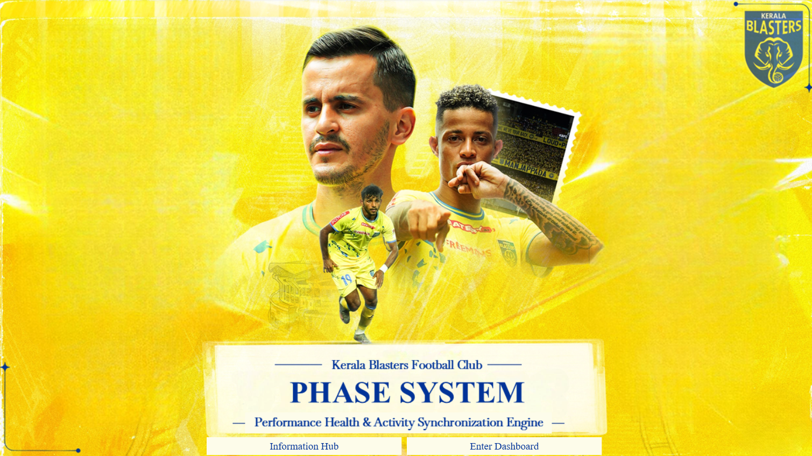
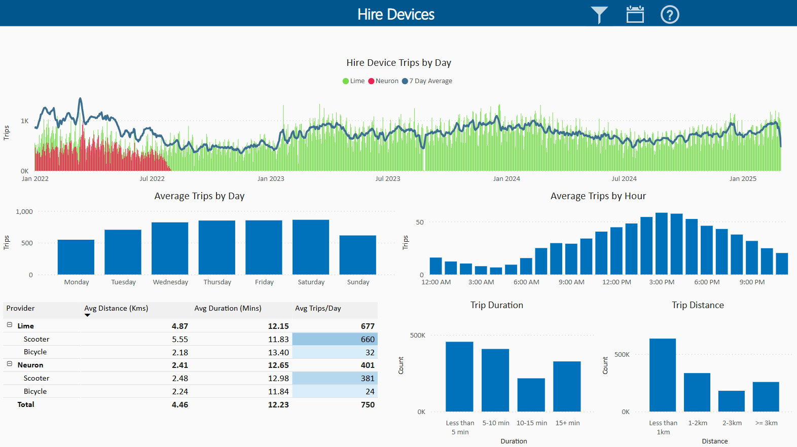
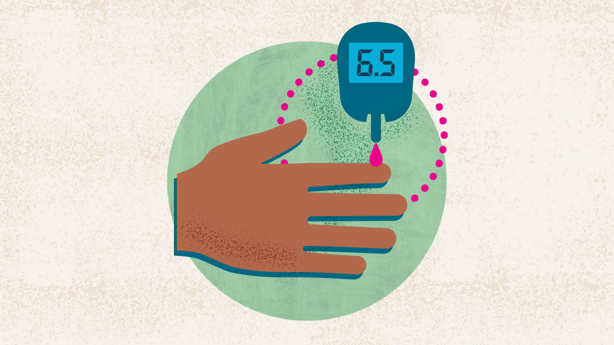
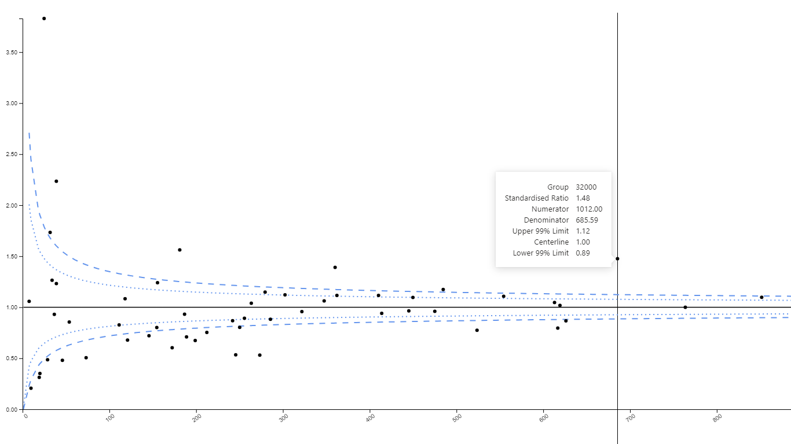

Data Analyst
& Scientist.
Currently turning complex problems into clear, actionable insights as a Principal Data Analyst/Scientist at the City of Boroondara in Melbourne.
Hello, I'm Jeffrey.
I'm a data analyst and data scientist who enjoys turning complex problems into clear, actionable insights. I’ve led statewide initiatives, working across teams to deliver data-driven solutions that make a real impact, particularly in healthcare.
I’m driven by curiosity, strategy, and building systems that actually get used - not just analysed. As I grow in my career, I’m focused on stepping into leadership roles where I can guide teams, shape direction, and deliver meaningful outcomes through data.
Outside of work, you’ll usually find me watching sports, training at the gym, or catching up with friends over a drink - I value balance just as much as ambition.
Let’s connect and talk data.
5+
Years Exp.
50+
Projects
Professional Experience
Where my career has taken me so far.
Senior Data Analyst
City Of Boroondara • Melbourne, VIC
May 2025 - Present
Senior Data Analyst
City Of Boroondara • Melbourne, VIC
- Designed and delivered enterprise-grade Power BI dashboards spanning Customer Experience, Councillor Correspondence, CRM performance, Statutory Building Permits, Finance, and Communications, actively used by the Mayor, Councillors, Directors, and CEO for strategic decision-making.
- Led the development of an award-winning Statutory Building Permit Analytics Dashboard, recognised at the State Urban Planning Annual Awards for excellence in data-driven planning and regulatory insight.
- Developed the organisation’s primary CRM Request Analytics platform, now the central performance reporting tool, enabling identification of service bottlenecks, operational inefficiencies, and data quality improvements.
- Delivered a unified finance analytics platform following the Oracle Finance implementation, integrating general ledger, purchase orders, contracts, budgets, and cost centres into a single executive reporting layer.
- Enabled self-service analytics capabilities for Strategic Communications by integrating and transforming data from 8+ disparate sources, improving reporting accessibility and insight generation.
- Established enterprise Power BI theming standards using JSON, significantly improving report consistency and reducing development turnaround time.
- Engineered an automated Power BI dependency and lineage solution using R, SQL, and Tabular Editor, supporting data warehouse modernisation and governance.
- Developed an advanced geospatial analytics solution mapping CRM cases to nearest shopping centres and precincts, leveraging shortest-path algorithms and NLP-based location inference for incomplete address data.
Senior Analyst
Department of Health (WA) • Perth, Western Australia
Nov 2023 - May 2025
Senior Analyst
Department of Health (WA) • Perth, Western Australia
- Led the end-to-end development of a statewide safety and quality analytics platform, integrating multi-source hospital data to monitor 38 performance indicators aligned with national and state frameworks using robust data modelling and transformation pipelines.
- Delivered advanced analytical insights to the Director General of Health through exploratory data analysis, trend modelling, and risk stratification, enabling early identification of system-wide performance issues.
- Presented to interstate health agencies and executive boards on the application of Statistical Process Control (SPC) methodologies, including control chart design, variation analysis, and performance signal detection in healthcare settings.
- Directed the implementation of the "Making Data Count" initiative, adapting NHS statistical frameworks and embedding advanced modelling techniques to enhance performance monitoring and decision-making accuracy.
- Engineered a real-time stroke analytics dashboard by integrating clinical and administrative datasets, enabling clinicians to access timely, actionable insights to support treatment decisions and pathway optimisation.
- Developed and deployed an NLP pipeline to extract and classify diabetic indicators from unstructured discharge summaries, leveraging text processing and pattern recognition techniques to accelerate clinical coding timelines by four months.
Data Analyst
Health New Zealand • Hamilton, New Zealand
May 2023 - Dec 2023
Data Analyst
Health New Zealand • Hamilton, New Zealand
- Developed a predictive modelling framework to estimate patient length of stay at admission, leveraging historical clinical and operational data with advanced feature engineering and regression-based machine learning techniques.
- Built a time-series forecasting model to project patient volume over a 12-month horizon, incorporating seasonality, trend decomposition, and demand drivers to support hospital capacity planning and resource allocation.
- Performed statistical analysis of outpatient waiting lists and designed a discrete-event simulation model to evaluate patient flow dynamics, identify system bottlenecks, and optimise scheduling efficiency.
- Engineered an end-to-end data pipeline and real-time dashboard for Emergency Department operations, integrating multiple data sources to track patient bed requests and wait durations, enabling SLA monitoring and throughput optimisation.
Data Scientist
Luma Analytics • Auckland, New Zealand
Jun 2021 - May 2022
Data Scientist
Luma Analytics • Auckland, New Zealand
- Developed a data quality monitoring framework using Power BI and Snowflake SQL, implementing validation rules and anomaly detection to assess data integrity and improve upstream data collection processes.
- Engineered a scalable, multi-language data pipeline (Python, R, Scala) on Azure Databricks, integrating data from distributed storage systems and transforming it into curated datasets for analytics on streaming platform performance metrics.
- Architected and orchestrated data workflows across Azure Synapse and Blob Storage, enabling efficient data ingestion, transformation, and serving layers to support near real-time dashboarding.
- Delivered regulatory remediation analytics for a major banking client by developing SQL-based identification logic, automating customer eligibility pipelines, and surfacing outputs through Power BI dashboards for business decisioning.
As part of a consultancy engagement, delivered data and analytics solutions for clients including Tower Insurance, TVNZ, and Kiwibank, operating within agile delivery frameworks.
Data Scientist
Hamilton City Council • Hamilton, New Zealand
Nov 2019 - Nov 2020
Data Scientist
Hamilton City Council • Hamilton, New Zealand
- Developed and maintained a daily-refreshing micro-mobility analytics dashboard, analysing e-scooter usage patterns across the city to inform policy and infrastructure decisions. Article Link: E-Scooters Get Thumbs Up
- Applied unsupervised clustering algorithms and geospatial analysis to model neighbourhood activity centre distributions, supporting long-term urban growth and infrastructure planning.
- Conducted statistically rigorous impact analysis on the post-implementation effects of roundabouts, evaluating traffic redistribution and congestion reduction across key transport corridors.
- Built clustering models to identify behavioural patterns and correlations in motorist activity between the central business district and outer suburbs, integrating spatial and statistical analysis to compare driving behaviours across regions using R and ArcGIS.
Started as an intern and was subsequently offered a continued role through the final year of university, delivering data-driven insights to support urban planning and transport strategy.
Featured Projects
Showcasing data engineering, ML, and dashboard design.

Sports Analytics
P.H.A.S.E System (ISL)
Performance Health & Activity Synchronization Engine developed for Kerala Blasters F.C. Tracks workload, HR, and physical recovery metrics bridging training and match performance.

Spatial Data
Micromobility Usage Tracking
Interactive dashboards for Hamilton City Council mapping tagging camera data to analyze transport routes, peak times, and support the Lime scooter contract extension.
View Publication
Machine Learning / NLP
Diabetes Patient Classification
Built an NLP model using spaCy in SnowPark to identify diabetic patients from hospital discharge summaries, integrated into a clinical Power BI dashboard.
Simulation / Bayesian
FIFA World Cup Simulator
A Bayesian model simulating historical match data, head-to-head records, and player ratings through Monte Carlo iterations to accurately predict tournament outcomes.
Repository
Business Intelligence
SQuIS Healthcare Dashboard
Statewide Safety & Quality indicator suite utilizing Statistical Process Control (SPC) charts and funnel plots to benchmark WA hospital performance and detect variance.
Data Engineering
WA Health NLP Summarizer
Python-based class analyzer parsing eForm feedback text. Utilized regex for robust name-redaction (protecting staff privacy) before performing sentiment analysis and theme extraction.
Technical Arsenal
Tools, languages, and frameworks I use daily.
Programming & Scripting
Platforms & Technologies
Education & Certifications
B.S. Computing & Math (Hons)
University of Waikato • First Class Honours
Hamilton, New Zealand • Feb. 2017 – Dec. 2020
- Double major in Computer Science & Data Analytics (GPA: 3.7/4.0)
- Honours dissertation on diabetic patient prevalence modelling.
Google Data Analytics

Professional Certificate
Remote • Nov. 2022
- Applied advanced statistical methods and machine learning techniques in Python (regression, classification, and clustering) to solve real-world business problems.
- Built end-to-end analytical workflows including data cleaning, exploratory data analysis, predictive modelling, and communicating insights to stakeholders.
TensorFlow & IBM Data Science
DeepLearning.AI & IBM
Remote • Jul. 2022
- Developed foundational data science skills using Python, SQL, and data visualisation tools to collect, clean, analyse, and present data-driven insights.
- Built and deployed basic machine learning models using scikit-learn, applying supervised and unsupervised techniques while working with real datasets through end-to-end data science projects.
Colleague Feedback
Jeffrey developed robust analytical models and insightful visualizations, which significantly contributed to our decision-making processes. He built a forecasting model to predict patient length of stay and patient volume, conducted statistical analyses of outpatient waiting lists, and created a data pipeline and dashboard for the Emergency Department. His work not only improved operational efficiency but also enhanced patient care.
Beyond his technical skills, Jeffrey is committed to continuous learning and professional development. He actively seeks networking opportunities and certifications to stay at the forefront of the field. His collaborative nature and excellent communication skills made him a valuable team member who could effectively convey complex data findings to both technical and non-technical stakeholders.
Although Jeffrey has moved to Australia for better career prospects, his impact on our team remains. I highly recommend him for any future opportunities. His dedication, expertise, and positive attitude make him an outstanding professional."
Ahmed Ahsan Saeed
Production Planning Manager, Health New Zealand
Dale Townsend.
Data Science Manager, Hamilton City Council
Get in Touch
Have a question or want to work together?
Contact Information
Feel free to reach out. I usually respond within 24 hours.
jeffreyjose91@gmail.com
Phone
+61 430 613 580
Location
Melbourne, Australia